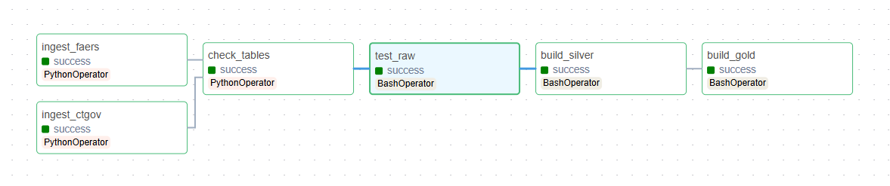

Women in Drug Research & Safety
Clinical trial representation vs. post-market drug safety reports
Repogithub.com/annmarleenvarul/women-in-drug-research-and-safety
Compare how women are represented in clinical research with how they appear in post-market drug safety reports, to flag drugs and conditions where the two diverge.
Project 2 implements the Project 1 design as a running pipeline. An Airflow DAG pulls two JSON APIs (openFDA FAERS and ClinicalTrials.gov v2) into a PostgreSQL 16 warehouse. dbt then builds silver staging tables and the gold star schema (2 facts, 6 dimensions, 1 bridge), with tests between every step. Everything runs in Docker Compose. The repository holds all code, setup steps and full results; this report explains the design and links to them.
01Changes since Project 1
| Area | Project 1 design | Project 2 implementation | Reason |
|---|---|---|---|
| Drug matching | Link FAERS and trials via RxNorm ingredient codes (RxCUI) | Match on a normalised ingredient name (normalize_drug_name macro); RxCUI kept as an attribute | ClinicalTrials.gov has no RxCUIs, only free-text names |
| Medallion layers | Raw → staging → warehouse | Schemas raw (bronze), silver, gold in one database | Assignment's medallion structure; raw kept as the bronze name |
| Ingestion | Trials daily, FAERS quarterly bulk files | One manual, parameterised DAG for both APIs (date windows, record limit) | Reproducible, testable runs within API page limits |
| Reporting | Superset dashboards, Streamlit app | Not built; Q1–Q5 answered by dbt analyses, results in the README | Outside the Project 2 scope |
Unchanged: business questions Q1–Q5, KPIs, fact grains and SCD types (dim_trial Type 2 is implemented as the dbt snapshot snap_ct__studies).
02Architecture
Every arrow is an Airflow task dependency ([ingest_ctgov, ingest_faers] >> check_tables >> test_raw >> build_silver >> build_gold). A failure at any gate stops the run, so gold is only rebuilt from data that passed every test. dbt runs from its own virtual environment inside the Airflow image (Dockerfile.airflow), so its dependencies cannot clash with Airflow's.
03Database engine: PostgreSQL 16
All three layers live as schemas in one PostgreSQL database (research-db); Airflow's metadata has its own container. We chose PostgreSQL by matching our workload against what each engine is good at:
| Factor | Our workload | Consequence for the engine |
|---|---|---|
| Data shape | Nested, versioned JSON from two APIs | Native JSONB and SQL/JSON paths let bronze keep documents and dbt flatten them in the same engine, without a separate document store |
| Volume | About 60 MB after two runs (43 MB raw JSON, 11 MB gold); 19,429 adverse-event fact rows | Fits one node in memory; no distributed or columnar storage needed |
| Updates | Idempotent inserts by primary key; SCD Type 2 snapshot closes rows with UPDATE; silver/gold rebuilt transactionally each run | Row-level, transactional DML is cheap in a row store |
| Queries | Star joins and grouped aggregates over a few columns (Q1–Q5) | B-tree indexes on surrogate and foreign keys; sub-second at this size |
| Deployment | Airflow tasks, dbt and pgAdmin connect concurrently from separate containers | Needs a client–server database; dbt-postgres is the reference adapter |
Compared with DuckDB / ClickHouse. A columnar engine reads only the columns a query touches and runs vectorised over them, an advantage for full scans such as Q5 that grows with volume. Here its costs fall on the operations we perform most. DuckDB is an embedded single-writer file, so separate Airflow tasks and clients cannot share it like a server. ClickHouse runs updates as asynchronous mutations, which complicates the SCD Type 2 snapshot, and would add a second service and SQL dialect. The trade-off we accept is slower scans if the full FAERS history (tens of millions of reports) were loaded; pre-aggregated gold tables or a DuckDB gold layer reading from PostgreSQL would then be the next step. Details: docs/database_engine_choice.md.
04Pipeline: Airflow DAG ingest_sources

dags/ingest_sources.py). Manual schedule, one active run, 2 retries per task.receivedate:[20250101 TO 20250331], and both queries are sorted by date. The run fails early if from > to.ON CONFLICT DO NOTHING. A new document version becomes a new row; an identical one is skipped. Silver and gold are rebuilt from raw on every run, so they cannot accumulate duplicates.Verification runs
| Run | Parameters | Result |
|---|---|---|
| A: first parameterised load | defaults (CT.gov since 2025-01-01, FAERS 2025-Q1, limit 1000) | All 6 tasks green; ~1,000 new rows per source; fetched = found, 0 bad rows |
| B: rerun, same parameters | identical to A | Inserted: 0, Skipped: 1000 for both sources; all layer row counts identical to A; 0 duplicate keys |
| C: invalid input | faers_received_from 2025-04-01 > _to 2025-03-31 | ingest_faers failed with a clear message; downstream upstream_failed; gold untouched |
05Transformations: dbt
| Layer | Models | Materialisation | Role |
|---|---|---|---|
| Source | raw.faers_reports, raw.ctgov_studies (_sources.yml) | declared sources | Source tests run before anything is rebuilt |
| Silver | base_faers__latest_reports, base_ct__latest_studies | ephemeral | Latest version of each document (window function) |
stg_faers__reports, __suspect_drugs, __reactions; stg_ct__studies, __study_conditions, __study_drugs | table | One table per grain: JSON flattened, codes decoded, names normalised | |
snap_ct__studies | snapshot | SCD Type 2 trial history | |
| Gold | fact_adverse_event, fact_trial_drug, dim_trial, dim_drug, dim_condition, dim_reaction, dim_patient_profile, dim_date, bridge_trial_condition | table + indexes | Star schema with deterministic hash surrogate keys |
All dependencies are expressed with ref() and source(), so dbt derives the build order. The lineage graph and the dbt docs screenshot are in the README. Grains: fact_adverse_event has one row per suspect drug × reaction within the latest version of a FAERS report; fact_trial_drug has one row per drug × trial.
Representative transformation: one FAERS document → fact rows
-- stg_faers__suspect_drugs.sql (simplified): explode the nested drug array, keep suspects only select r.payload ->> 'safetyreportid' as report_id, {{ normalize_drug_name("coalesce( drug -> 'openfda' -> 'generic_name' ->> 0, -- 1st: openFDA harmonised name drug -> 'activesubstance' ->> 'activesubstancename', -- 2nd: active substance drug ->> 'medicinalproduct')") }} as ingredient_name -- 3rd: free-text product from {{ ref('base_faers__latest_reports') }} as r cross join lateral jsonb_array_elements( coalesce(r.payload -> 'patient' -> 'drug', '[]')) as drug where drug ->> 'drugcharacterization' = '1' -- 1 = suspect drug
A report with 2 suspect drugs and 3 reactions becomes 1 + 2 + 3 silver rows and 2 × 3 = 6 rows in fact_adverse_event, keyed to dim_drug, dim_reaction, dim_patient_profile and dim_date.
Tests and documentation
unique and not_null on every key, relationships from every fact foreign key to its dimension, accepted_values on decoded codes, and a custom unique_combination on the raw (id, version) keys.dbt/tests/)
Raw IDs match the JSON; min age ≤ max age; one current version per trial; no overlapping SCD2 periods; schema drift. Docs: every model and column is described in _silver.yml / _gold.yml.06Results: business questions
From 1,997 trials and 2,000 FAERS reports (runs of 23 Nov 2026). SQL in dbt/analyses/; full tables in the README and docs/results/queries.md.
FAERS has no denominator (it shows reporting patterns, not incidence), and trial eligibility shows who could enrol, not who did. The figures come from a 2,000-report sample and illustrate the pipeline; they are not population estimates.
07Extra credit B: semi-structured data integration
Approach. Both sources are nested, versioned JSON. The DAG extracts only each record's ID and version, which form the idempotent primary key, and stores the whole record unchanged as JSONB. All structural work happens in dbt silver. The profiling evidence below comes from five analyses in dbt/analyses/semi_structured/; results are in docs/results/semi_structured.md.
| Structure | Evidence from our data | Handling in silver |
|---|---|---|
| Nested objects | Paths up to 4 levels deep, e.g. patient.drug[].openfda.generic_name[] | ->, ->>, #>>, jsonb_path_query_array |
| Arrays → rows | 1–153 drugs and 1–101 reactions per report; 1–45 conditions per trial | cross join lateral jsonb_array_elements |
| Optional fields | Patient age present in 63.8 % of reports, sex 90 %, trial maximum age 55 % | coalesce; missing → NULL / Unknown, never a failed load |
| Same fact, different places | Drug name from openFDA in 81.2 %, active substance 8.5 %, free-text product 10.2 % | Fallback chain + normalize_drug_name |
| Values as strings | "1"/"2" codes, "18 Years", dates "2024-03" (528) vs "2024-03-15" (1,460) | Decoding macros (age_helpers, date_helpers) |
| Versions and drift | Follow-up report versions; APIs outside our control | Latest-version models + snapshot; warn-level drift test on the 29 paths the models use |
Compared with conventional PostgreSQL tables
The relational alternative is to define typed tables up front (report, report_drug, report_reaction, trial, …) and parse each document into them in Python at ingestion (schema-on-write). Both approaches run on the same engine and produce the same gold star schema. The difference is where and when the structure is interpreted.
| Aspect | JSONB bronze + dbt (ours) | Typed tables at ingestion |
|---|---|---|
| New field needed | Already stored; add a column in dbt and rebuild (e.g. disability outcomes for Q5) | Change DDL and parser, re-call the API for history; old versions may be gone |
| Parsing bug | Fix SQL, rebuild; raw untouched | Mis-parsed data must be re-ingested |
| API changes a field | Load succeeds; drift test warns | Insert fails, or the field is silently dropped |
| Type safety at load | Weak: only keys are typed; enforced later by silver casts and dbt tests | Strong: typed columns, NOT NULL, foreign keys |
| Storage and parsing | About 23× larger; JSON re-parsed on each run | Compact; cheap typed scans |
Why it fits here. The sources are external and versioned, the questions are still evolving and the volume is small. Whole documents make every silver and gold table rebuildable without calling the APIs again, and keep all structural logic in one tested place; type safety is recovered one layer later. At full FAERS scale, the most-used paths would be extracted into typed columns at load. MongoDB would add a second database and an extract step before dbt.
Write-up: docs/semi_structured_integration.md.
08Team roles and contributions
| Member | Role in Project 2 | Contribution |
|---|---|---|
| Anett Sitsi | 2.1 Data ingestion (Airflow) | 20 % |
| Beatrice Hellrand | 2.2 Data storage | 20 % |
| Anne-Mai Melles | 2.3 Transformation (dbt) | 20 % |
| Ann Marleen Varul | 2.4 Orchestration (Airflow + dbt) | 20 % |
| Oskar Telgmaa | 2.5 Extra credit (B: semi-structured data integration) | 20 % |
09LLM disclosure
We used Claude Code, Claude.ai (Anthropic) and ChatGPT (OpenAI) as programming and writing assistants: for code (DAG, dbt models, analyses), debugging, documentation and this report. Team members ran every build, DAG trigger and query themselves, and reviewed all generated code and text. No shareable chat links are available for these sessions.
—References
- U.S. Food and Drug Administration. openFDA Drug Adverse Event API. open.fda.gov/apis/drug/event
- U.S. National Library of Medicine. ClinicalTrials.gov API v2. clinicaltrials.gov/data-api/api
- PostgreSQL Global Development Group. PostgreSQL 16 documentation: JSON types and functions. postgresql.org/docs/16/functions-json.html
- Apache Software Foundation. Apache Airflow 2.8 documentation: Params. airflow.apache.org/docs
- dbt Labs. dbt documentation: snapshots, tests, analyses. docs.getdbt.com
- DuckDB Foundation. Concurrency. duckdb.org/docs/connect/concurrency; ClickHouse Inc. Mutations / ALTER UPDATE. clickhouse.com/docs